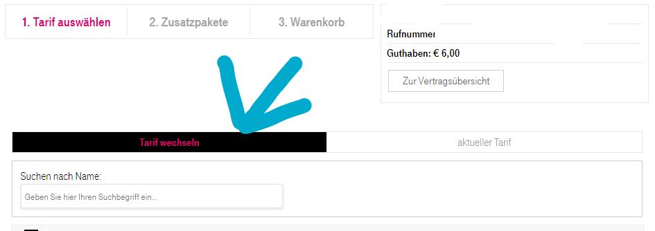

Hallo
Evtl. war dies eh schon oft hier Thema, bzw. irgendwo in der Hilfe zu finden - ich fand nichts.
Kann man mit einer Handy-Wertkarte ins Internet?
Frage, weil das Handy meiner Frau hat eine Wertkarte drin und bei früheren Versuchen eine Webseite zu öffnen ging das enorm langsam und kostete Unmengen an Guthaben. Also bis bloß google geladen war, fehlten gleich mal eine Menge €uro (weiß nicht mehr genau).
Irgendjemand meinte: "
Da musst Zugangsdaten im Handy hinterlegen
". Anderer meinte: "
dann brauchts einen anderen Tarif
" ... "
das geht nur mit Vertrag!
" usw. 10 Leute fragen, 10 verschiedene Antworten. Geholfen hat nichts.
Anlässlich der WK-Registrierung (die nur beim HARTLAUER problemlos ging, weder im Shop, noch online klappte) testeten wir das nach Jahren wieder. Doch selbst die Berater schafften es nicht, damit ins Netz zu kommen. Nun ging gar nichts "
Dienst nicht verfügbar"
oder so stand da. Gut, es kostete kein Guthaben.
Aber warum es nicht geht, wussten die auch nicht.
So bitte ich um eine möglichst einfache Antwort für absolute Dummies. Wie kann man mit Wertkarte ins Netz?
Ich meine damit nicht, sich irgendwie ins Heimnetzwerk zu hängen, sondern ein echten mobilen Internetzugang mit dem Handy.
Es ist ihr nicht wirklich wichtig, hauptsache Telefonieren geht. Aber es interessiert doch, wie beides, Sprach u. Datentelefonie mit Wertkarte geht.
PS
: Sie beabsichtigt, sich ein Tablet zu kaufen, welches mit SIM echten mobilen Netzzugang hat. Weil das winzige Handy bietet da wenig Komfort.
Nur sollen diese Tablets richtig teuer sein - stimmt das? Wie kennt man denn Tablets auseinander, also jene die nur per LAN/WLAN ins Netz kommen und solche mit SIM? Das schreibt ja nicht jeder leicht erkennbar dazu.
Danke!
Bearbeitet von fullpauwaHallo @fullpauwa
Ja klar kann man mit einer Wertkarte ins Internet.
Ich würde da halt darauf acht das es aktueller Wertkarten-Tarif aktiv ist.
Wenn man genau nach Verbrauch abrechnen lassen will kostet eine Minute/eine SMS/ein MB 9 Cent ( Mobile Klax Basic ). Da würde ein Gigabyte Daten schon auf 92,16€ kommen! Schlauer wäre da ein Wertkarten-Paket ( hier die Übersicht ). Die starten ab 10€/4 Wochen (also 13x pro Jahr) mit 4GB Daten (nur in Österreich nutzbar) und 1.000 Minuten/SMS kombiniert.
Ich nehme mal an, dass es sich um ein "Tastenhandy" handelt und kein Smartphone, da wäre das Modell interessant, da mit diesen wohl weniger gehen wird im Bezug auf Internet.
Zum Thema Tablett:
Ja die können richtig teuer sein (iPad Pro mit 12,9 Zoll Display, 1TB Speicher und Mobilfunk für 2.100€) aber auch richtig günstig (Amazon Fire 7 mit 7 Zoll Display, 16GB Speicher und nur W-Lan für 70€).
Die meisten mit Mobilfunk haben im Titel 4G oder LTE stehen.
Ein Beispiel für ein Tablett mit Mobilfunk wäre das Galaxy Tab A 10.1 T515 mit 10,1 Zoll Display, 32 oder 64 GB Speicher und 4G+/LTE-A Mobilfunk für ab 219€ (in Schwarz, Gold & Silber erhältlich) .
Weitere Tabletts mit 4G-Mobilfunk kannst du dir hier ansehen.
Als nur Internet Wertkarten würde Magenta
anbieten (Tarife mit 4 Wochen Laufzeit = 13x pro Jahr; die Tarife sind nur in Österreich nutzbar).
LG NTM
Bearbeitet von NTMHallo und Danke für die Tipps!
vor 9 Stunden schrieb NTM:( Mobile Klax Basic ). Da würde ein Gigabyte Daten schon auf 92,16€ kommen!
Echt ??? Also daher war das Guthaben gleich weg, als sie damit mal testweise ins Netz ging.
vor 9 Stunden schrieb NTM:Schlauer wäre da ein Wertkarten-Paket
Ja, das kapiere sogar ich. Da käme 1 GB auf 2,5 p Monat
vor 9 Stunden schrieb NTM:"Tastenhandy"
Nein, aber ein winziges Samsung GT-S5230, glaube so 3".
vor 9 Stunden schrieb NTM:Tablett mit Mobilfunk
Also es geht so bei 200,- los, ok.
Ich sah kürzlich ein Medion (eh klar, beim Hofer) um 180,- da stand auch irgendwas mit SIM oder so drauf. Habs mir nicht getraut zu kaufen, war mir nicht sicher.
Archos , hm. das wär ja auch ok für den Einstieg - oder gibts da einen Haken, weil die gar so billig sind?
vor 9 Stunden schrieb NTM:nur Internet Wertkarten
"nur" Internet? Telefonie und Internet, oder? (Sorry, wie gesagt, bin da voll Dummie)
vor 9 Stunden schrieb NTM:Internet Klax 30 (Achtung der Tarif ist nur in Kombination mit dem Router für 89€ inklusive unlimitierte Daten für 28 Tage ... für 25€/4
Das (für 1x 89 + 25 pM.) könnte man sich auch gleich als Heimnetzwerk einrichten, oder? Also statt A1 Festnetz was ich jetzt habe.
Danke!
Hallo @fullpauwa
vor 21 Minuten schrieb fullpauwa:Nein, aber ein winziges Samsung GT-S5230, glaube so 3".
Das gute alte Samsung Star. So eines hatte ich vor 8 - 9 Jahren auch mal, weiß aber nicht genau wo das verschollen ist.
Hatte mir damals beim Anbieter ein Datenpaket dazu gebucht, um Internet nutzen zu können, was ich aber praktisch kaum gemacht habe.
Das man damit nicht mehr viel im Internet machen kann, würde mich nicht wundern.
An sich muss man für Internet eben Zugangsdaten am Gerät einrichten. Ich hätte da aber nur eine Anleitung für das S5220 gefunden, weiß also nicht wie sehr das abweichen wird. Die Zugangsdaten sind bei Magenta aber auf jeden Fall andere:
Name: Magenta
Startseite: <nichts>
Proxy: <nichts>
Adresse: <nichts>
Port: <nichts>
Verweildauer: <nichts>
Zugangsname: internet.t-mobile.at
Benutzerkennung: t-mobile
Passwort: tm
vor 58 Minuten schrieb fullpauwa:Also es geht so bei 200,- los, ok.
Ich sah kürzlich ein Medion (eh klar, beim Hofer) um 180,- da stand auch irgendwas mit SIM oder so drauf. Habs mir nicht getraut zu kaufen, war mir nicht sicher.Archos , hm. das wär ja auch ok für den Einstieg - oder gibts da einen Haken, weil die gar so billig sind?
Es kommt halt auch darauf an, was sie mit dem Gerät machen möchte.
Die Medion Tabletts sind in der Regel ganz in Ordnung.
Zu Archos kann ich jetzt nicht sagen.
Ich würde, wenn es das Budget erlaubt, nichts zu billiges kaufen. Besonders wenn man plant es länger zu nutzen.
vor einer Stunde schrieb fullpauwa:"nur" Internet? Telefonie und Internet, oder? (Sorry, wie gesagt, bin da voll Dummie)
Ja, es sind nur Internet Wertkarten-Pakete. Mit denen kann man auch für 9 Cent pro Minute telefonieren oder 9 Cent eine SMS schreiben.
vor einer Stunde schrieb fullpauwa:Das (für 1x 89 + 25 pM.) könnte man sich auch gleich als Heimnetzwerk einrichten, oder? Also statt A1 Festnetz was ich jetzt habe.
An sich ist es von Magenta so angedacht. Allerdings ist der Router nicht besonders gut. Und bei Mobilfunk hängt die Bandbreite (neben anderen Faktoren) auch immer davon ab wie viele andere das Netz des Anbieters, bei einem in der Umgebung, nutzen (es kann also sehr gut oder gar nicht gut funktionieren).
LG NTM
vor 7 Stunden schrieb NTM:vor 8 Stunden schrieb fullpauwa:Samsung GT-S5230, glaube so 3".
Das man damit nicht mehr viel im Internet machen kann, würde mich nicht wundern.
Weiß auch nicht, ist das Handy meiner Frau und wir sind beide sehr wenig Telefonierer. Gesurft wird nur mit PC+Laptop, aber es wäre evtl. nützlich auch mal mobil ins Netz schauen zu können.
Ich weiß, es für alle > 5yo mehr als alltäglich, mit Smartphone & Co zu spielen, arbeiten usw.
Für uns ist die Mobiltelefonie wieder
(*)
"Neuland". Aber eben nur das mobile! Denn zumindest ich bin seit der Erfindung des WWW dabei, damit und dafür zu arbeiten. Aber eben alles stationär. Telefon, Internet, TV ist alles klassisch (hier läuft sogar noch ein über 25yo, gigantischer Röhren-TV mit Spitzenbild).
*)
Das war aber nicht immer so: Ich war in unserem Bundesland der allerallererste mit einem "Handy". Ok, es war ein riesiger Prügel von Elin, mit Antenne und das Netz hieß A oder B, weiß ich nicht mehr, ist auch irgendwann in den 80er Jahren gewesen ...
War drauf ur stolz, immer mit offenen Autofenster, lässig rausgelehnt und telefoniert. Damals richteten sich noch alle Blicke auf einen. Alle!
Aber: Nun konnte mich mein Chef überall erreichen und bald hasste ich das Läuten ... ;-)
Aber zurück in die Zukunft, zum Thema
Eine Anleitung für das GT-S5230 liegt hier herum, nur ist da definitiv nur vom navigieren mit Webbrowser die Rede, es werden die Tasten erklärt (Lustig, wenn man vor 20 Jahren selbst Browser bastelte) aber keine Rede, wie man mit dem Ding rein kommt.
vor 7 Stunden schrieb NTM:Zugangsdaten sind bei Magenta
Oh, danke, genau das meinte ich. Nur fand ich die nirgends hier und auch der Support konnte da nicht helfen. Wahrscheinlich habe ich mich dafür zu blöd ausgedrückt oder dachte man: "der ***********t uns, das ist Allgemeinwissen für den Kindergarten".
Nun müsste man nur noch wissen, wo das in das Handy rein gehört?
vor 7 Stunden schrieb NTM:Archos ... würde, wenn es das Budget erlaubt, nichts zu billiges kaufen.
Archos meinte, ich wäre ur robust? Da sah ich mal ein schweres, mit gummierten Ecken, machte einen sehr stabilen Eindruck. Nun bin ich überrascht, dass die so billig sind. Weiß nur nicht wo, wie es hieß und was es dort kostete.
Ich brauche ja immer was robustes, sieht man ja auch an meinen eigenen Handy: Samsung GT-B2710. Unkaputtbar und ich kanns bedienen (Smartphone nie).
vor 7 Stunden schrieb NTM:Ja, es sind nur Internet Wertkarten-Pakete. Mit denen kann man auch für 9 Cent pro Minute telefonieren
Also doch, beides geht mit einer Karte.
Nur wie kommt man an die Pakete? Muss man die Wertkarte neu kaufen, neue SIM oder was?
Weil ich versuchte ja schon, hier in "Mein Magenta" den Tarif oder so zu ändern, fand aber nix.
Danke!
vor 20 Minuten schrieb fullpauwa:Denn zumindest ich bin seit der Erfindung des WWW dabei, damit und dafür zu arbeiten.
vor 20 Minuten schrieb fullpauwa:*) Das war aber nicht immer so: Ich war in unserem Bundesland der allerallererste mit einem "Handy". Ok, es war ein riesiger Prügel von Elin, mit Antenne und das Netz hieß A oder B, weiß ich nicht mehr, ist auch irgendwann in den 80er Jahren gewesen ...
War drauf ur stolz, immer mit offenen Autofenster, lässig rausgelehnt und telefoniert. Damals richteten sich noch alle Blicke auf einen. Alle!
Und ich bin eben der Jungspund, welcher erst mit der HTL fertig ist und auf freiwilliger Basis hier im Forum aktiv ist.
vor 9 Minuten schrieb fullpauwa:Eine Anleitung für das GT-S5230 liegt hier herum, nur ist da definitiv nur vom navigieren mit Webbrowser die Rede, es werden die Tasten erklärt (Lustig, wenn man vor 20 Jahren selbst Browser bastelte) aber keine Rede, wie man mit dem Ding rein kommt.
vor 11 Minuten schrieb fullpauwa:Nun müsste man nur noch wissen, wo das in das Handy rein gehört?
Das Nutzlose Stück Klopapier habe ich auch gefunden, deswegen die Anleitung vom S5220 , dort wird es beschrieben. Wenn es nicht zu sehr abweicht kannst du sie ja verwenden.
vor 15 Minuten schrieb fullpauwa:Nur wie kommt man an die Pakete?
Im MeinMagenta gibt es die Option zum Tarif-Wechseln: 
Oder per SMS mit dem Text an die Nummer, welche immer unten dabei steht. Siehe Internet-Wertkarten-Pakete & Telefonie-Wertkarten-Pakete
vor 24 Minuten schrieb NTM:Jungspund
Schön! Lebt diese Zeit, wie wir es damals taten, voll aus - sie kommt nie wieder!
vor 25 Minuten schrieb NTM:deswegen die Anleitung vom S5220 , dort wird es beschrieben
Gibts da einen direkten Link? Weil da erscheinen sehr viele Tips zu vielen Themen
Und ich finde nix, auch in
https://www.handy-deutschland.de/bedienungsanleitung/samsung_gt_s5220_star_3.pdf
steht nicht, was ich wissen will
Bei dem https://www.handy-deutschland.de/bedienungsanleitung/samsung_gt_s5690_galaxy_xcover.pdf steht mehr bez. Verbindungen, , aber ich blicke mich auch nicht durch. (Das X-Cover würde mir nämlich auch gefallen, dafür würde ich die Wischerei am Touchdings auch noch lernen)
Danke, ich hab das mit den Tarifen gefunden!
Mann muss nun sehen, was Frau dazu sagt ...
vor 53 Minuten schrieb fullpauwa:Gibts da einen direkten Link? Weil da erscheinen sehr viele Tips zu vielen Themen
An sich ist das der Direktlink. Bei mir sieht die Seite so aus:
Da muss man eben immer auf weiter klicken (Schritt-für-Schritt-Anleitung).
vor 53 Minuten schrieb fullpauwa:Das X-Cover würde mir nämlich auch gefallen, dafür würde ich die Wischerei am Touchdings auch noch lernen
Mittlerweile gäbe es da auch das Galaxy XCover 4s (recht frisch am Markt).
Auch bei Tabletts hat Samsung etwas für Outdoornutzung (das Galaxy Tab Active 2 ). Kostet aber auch eine Ecke mehr und ist schon etwas älter (besonders wichtig wegen Software und Sicherheitsupdates).
vor einer Stunde schrieb NTM:Bei mir sieht die Seite so aus:
Bei mir so: Wobei das noch ne Weile mittels "mehr anzeigen" erweiterbar ist ...
vor einer Stunde schrieb NTM:
Schöne Geräte, gefällt mir.
Komisch, das Handy hätte am 8.8.2019 nur 149,- gekostet? War das evtl. der Amazon Day wo alles möglich billiger ist?
PS: MIL-STD-810, das kann angeblich jeder drauf schreiben,
ist nicht so bindend
wie die IP Schutzklassen. Wobei IP68 ist eh schon brauchbar.
{kind=link}
{kind=link}
{kind=link}